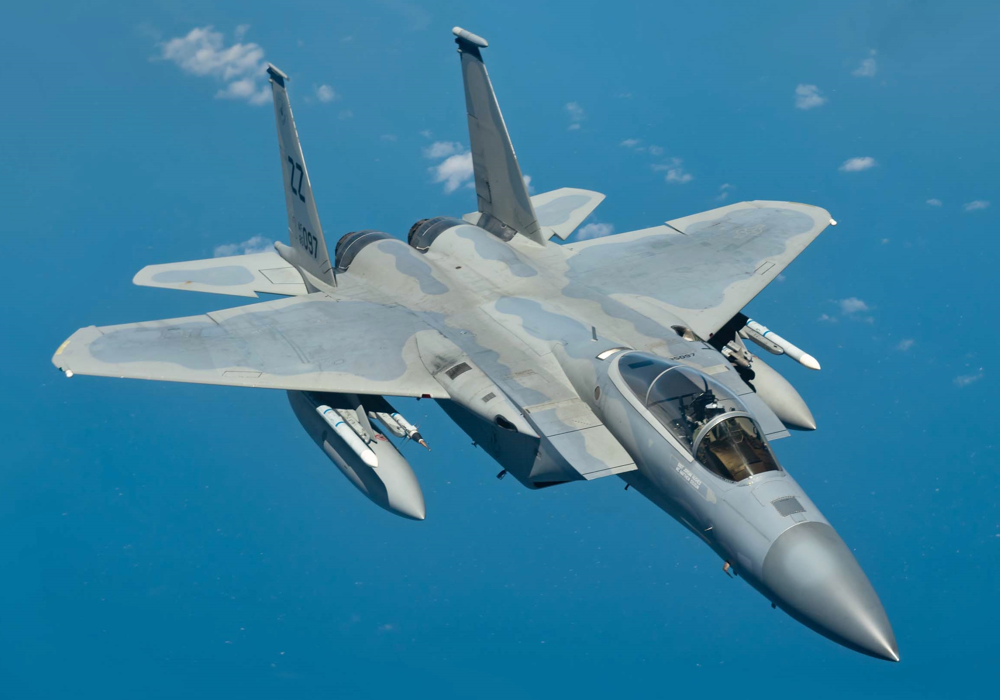

the f-15 is one of the greatest fighter jets ever produced here are some facts about it.
1. The f-15 fighter jet has 104 air to air victories and 0 losses.
2. The f-15 can go to speeds up to mach 2.5 which is 2,665 kilometres per hour or 1,900 miles per hour.
created by Alfred